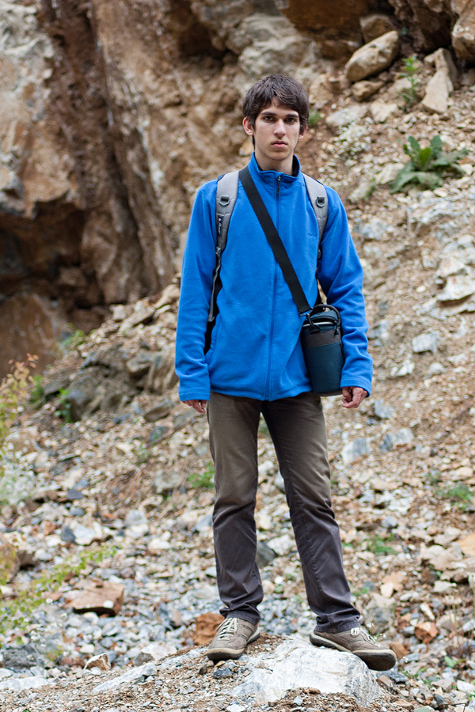

About

Dintre multiplele sintagme definitorii ale existentei as alege, fara ezitare, “fotografiez, deci exist”. Poate parea usor aberant pentru un amator de fotografie, insa, pentru mine, aceasta arte are mai multe fatete decat simpla imortalizare a unor fragmente de timp si spatiu. Eu vad lumea prin lentilele obiectivului meu si intreaga-mi perspectiva asupra vietii se lumineaza, in acea lumina pe care o capteaza materialul fotosensibil, retina. Fotografia e felul in care imi spun eu povestea, e curajul, nebun poate, de a transpune lumile ridicate de imaginatia mea in realul si realitatea lumii inconjuratoare. Posibilitatea de a instantaneiza fraturi de sentimente cu ajutorul unui trivial sistem optic reprezinta, de fapt, puterea magica de a retrai vieti intregi si, mai presus de asta, de a impartasi, sufleteste, optica lumii in care traiesc.
Fireste, descrierea perceptiei mele asupra fotografiei ca mod de exprimare a mediului meu sufletesc prin intermediul lumii inconjuratoare ar putea tinde la infinit (plus unu). Asa ca ma rezum la a adauga o nota, sper, deloc disonanta, intregii prezentari, nota referitoare la imbinarea perfecta a artei prin care fiinta mea vorbeste cu locurile dragi ei, munii. Piscurile ce zgarie cerul determina aceleasi trairi pe care observarea atenta a profunzimii lumii refractate de lentile le trezesc in mine. Astfel, intregul meu sufletesc se transpune perfect in totul format de fotografie, munti si cer. In cuvinte multe si totusi, atat de putine, sunt un fiu al muntelui, ce tinde, prin iubire, catre Cer si vorbeste deschis despre el insusi doar prin fotografii.